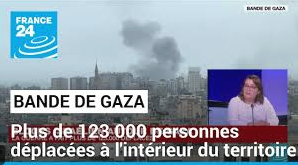

فلسطين
بنيامين نتنياهو يدين "الجريمة النكراء" عقب اغتيال مراهق إسرائيلي يبلغ من العمر 14 عاما في الضفة الغربية المحتلة
كما دعا رئيس حكومة الدولة "جميع المواطنين الإسرائيليين إلى استخدام قوات الأمن للقيام بتحركات دون دخول"، دون أن يشير بشكل مباشر إلى جيوش المستوطنين التي تهاجم القرى الفلسطينية في المنطقة منذ أربع وعشرين ساعة
تم النشر في 13 أبريل 2024 الساعة 3:32 مساءً، وتم التعديل في 13 أبريل 2024 الساعة 7:12 مساءً
مقالة محفوظة لمشتركينا الحياة المعلقة لعائلة غزية في القاهرة
في تشرين الثاني/نوفمبر، نشرت صحيفة "لوموند" تقريرًا عن الحياة اليومية للحرب في غزة من خلال الرسائل التي تبادلها المصور الصحفي سامح نضال رحمي مع مجتمع من المصورين العرب. ومن بينهم غابرييل فرنيني الذي يوثق قصة صديقه منذ 7 تشرين الأول/أكتوبر، والذي توجه لاستقباله في القاهرة بعد خروجه من غزة.
تم النشر في 8 أبريل 2024 الساعة 4:30 مساءً نسيم جاستيلي
الحرب بين إسرائيل وحماس: إسبانيا عازمة على الاعتراف بدولة فلسطين بحلول الأول من يوليو
بيدرو سانشيز يدعو جيرانه الأوروبيين للانضمام إلى مدريد في هذه المبادرة. ولم تبدأ أي مناقشة حتى الآن في هذه المرحلة في بروكسل من قبل الاتحاد الأوروبي.
تم النشر في 7 أبريل 2024 الساعة 7:41 مساءً، وتم تعديلها في 7 أبريل 2024 الساعة 8:26 مساءً ساندرين موريل فيليب جاك
شمال قطاع غزة، المحاصر من قبل الجيش الإسرائيلي، يغرق في المجاعة
ويُعتقد أن أكثر من 300 ألف شخص محاصرون في هذا الجزء من القطاع، وغير قادرين على المغادرة منذ أن قسمت إسرائيل المنطقة إلى قسمين.
تم النشر في 6 أبريل 2024 الساعة 2:00 مساءً وتم تعديلها في 7 أبريل 2024 الساعة 2:25 صباحًا